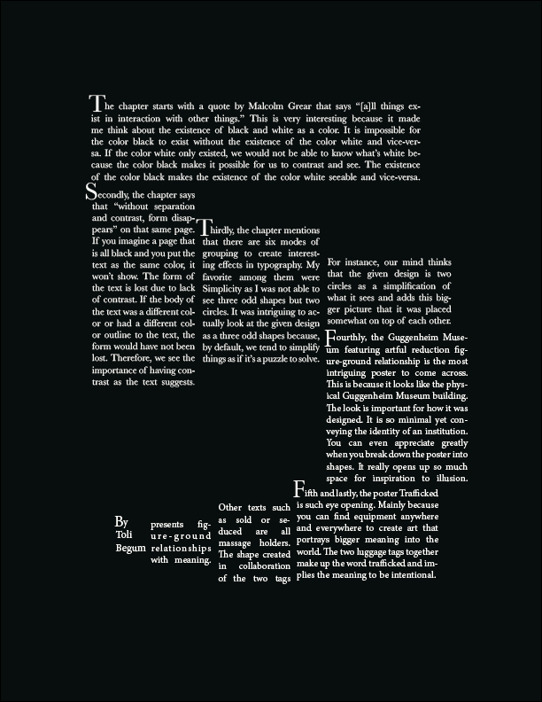
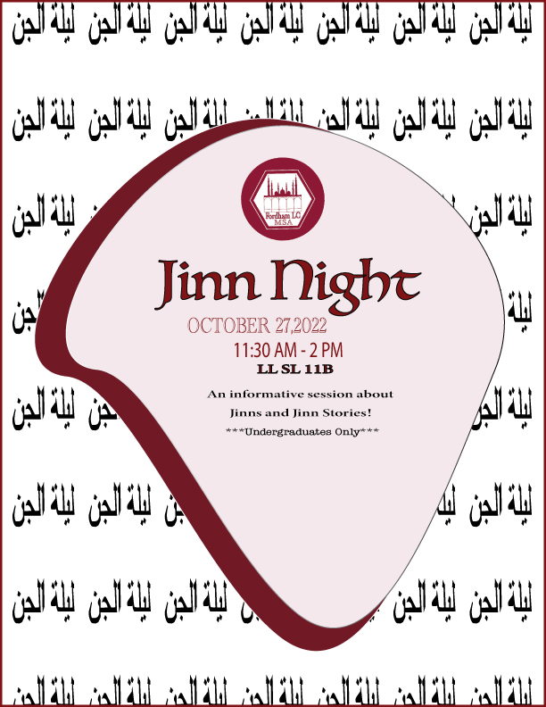
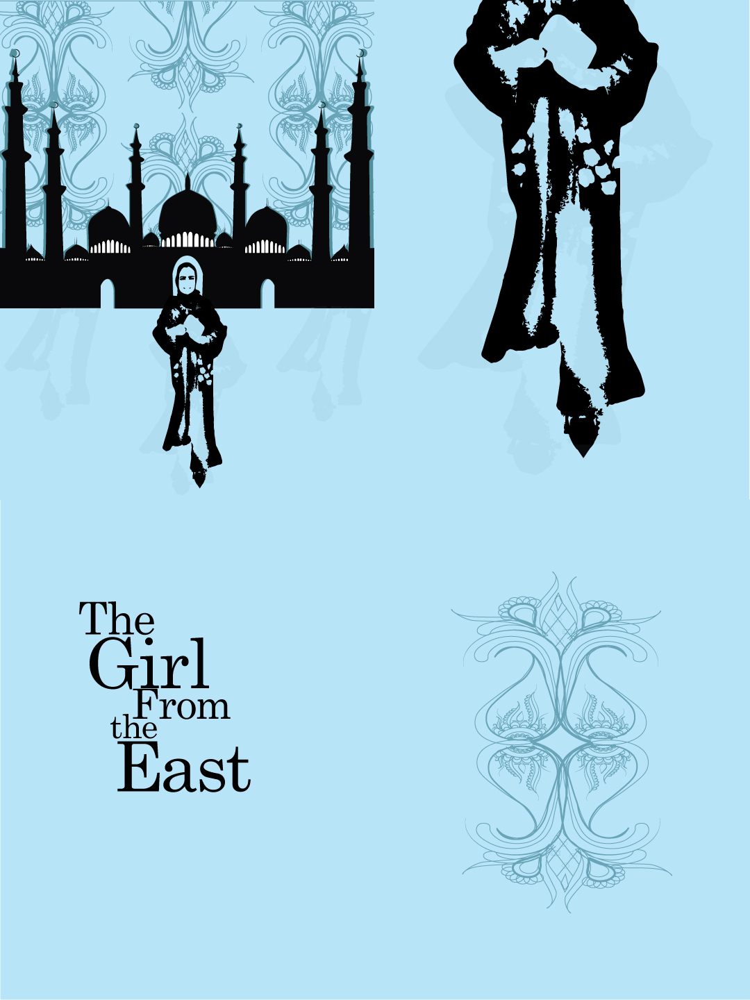
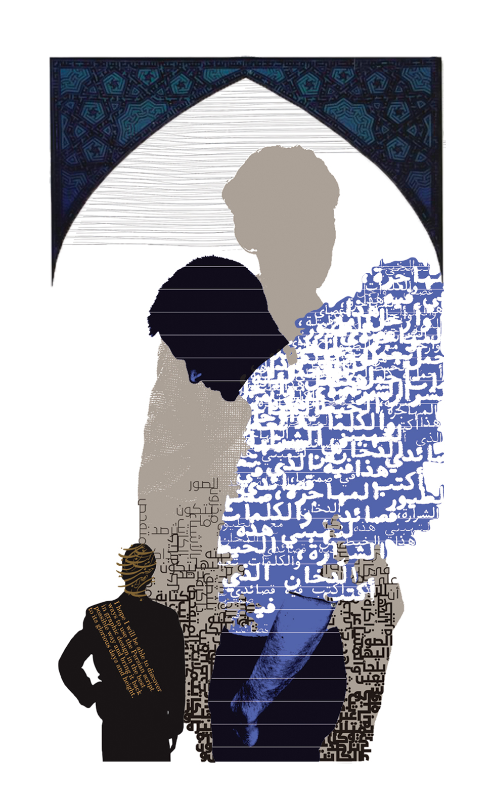
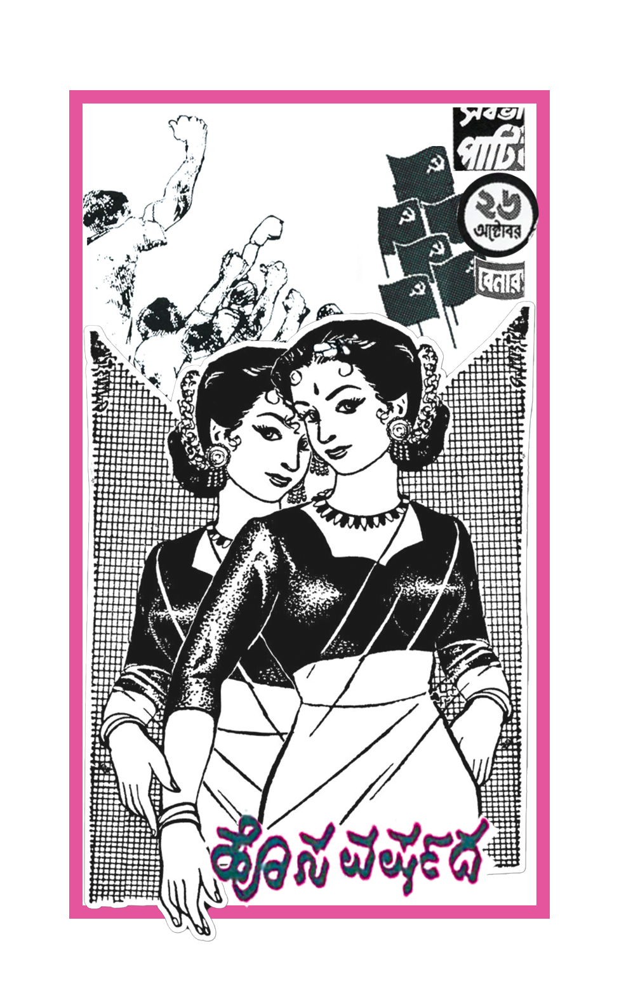
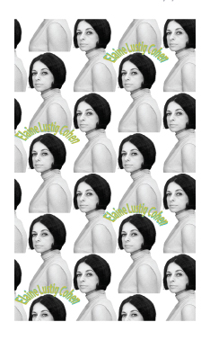
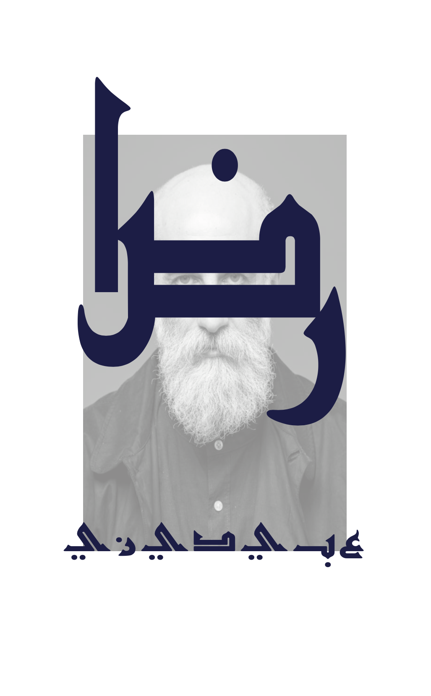
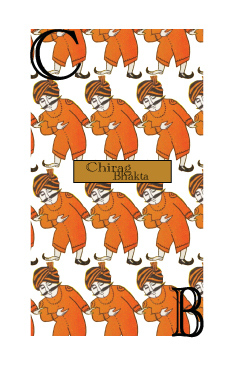
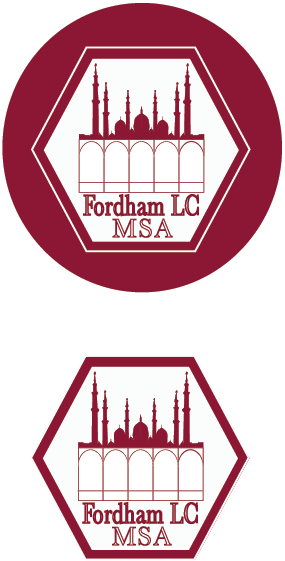

.jpg)
It is a letter-sized 8.5 x 11 inches Adobe Indesign document that uses the concepts of figure-ground relationships. The body of the design includes five things I learned or found interesting in reading Gestalt Principes in the book Graphic Design the New Basics by Ellen Lupton and Jennifer Cole Phillip. The whole design presents figure-ground relationships using the five reflections in the shape of the number 5.
It is a 8.5 x 11 inches Adobe Illustrator document that uses the pen tool to draw the phrase Jinn Night in Arabic to turn it into a Brush. That Brush was used for the background and the foreground including the details of the event by the Muslim Student Association at Fordham LC.
It is a 15 x 20 inches Adobe Illustrator document intended to design a self-portrait that expresses something that is distinctive and unique to me.
It is a 3 x 5 Adobe Photoshop double sided cards collaging the artwork of the chosen three Underrepresented artists: Elaine Lustig Cohen, Reza Abedini and Chiraag Bhakta. The back of the card consists my design decision using Brushes in Illustrator.
|
 |  |
|  |  |  |
Captured Intellect is the identity of my digital work. I like to identify my work under the label Captured Intellect. It is done on Adobe Illustrator.
This is a logo I created for the Muslim Student Association at Fordham LC club organization. It is done on Adobe Illustrator.
